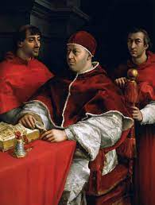

Ritratto di Leone X con i cardinali Giulio de' Medici e Luigi de' Rossi

Ritratto di Leone X con i cardinali Giulio de' Medici e Luigi de' Rossi
- Autore: Raffaello
- Anno: 1518
- Luogo: Galleria degli Uffizi, Firenze
- Supporto: Olio su tela